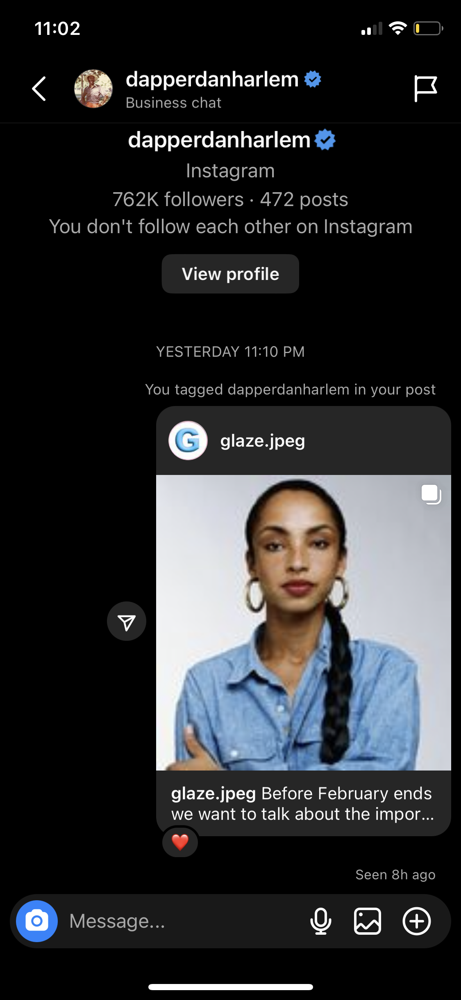
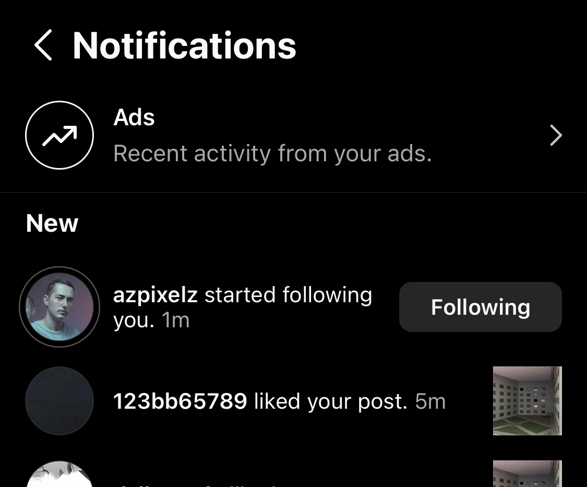
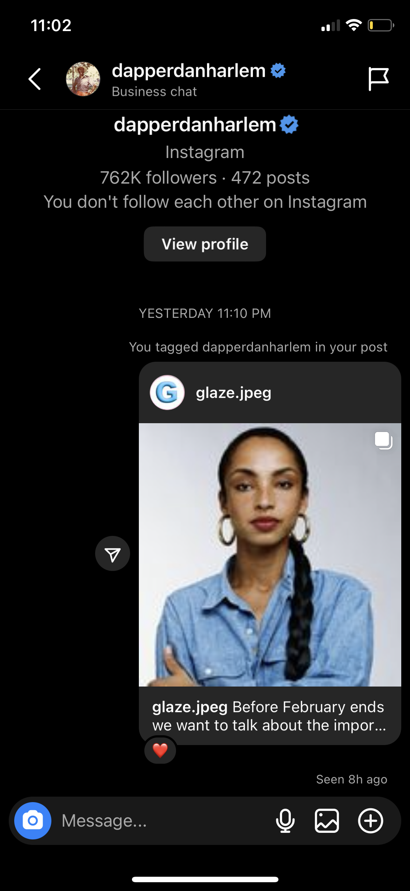
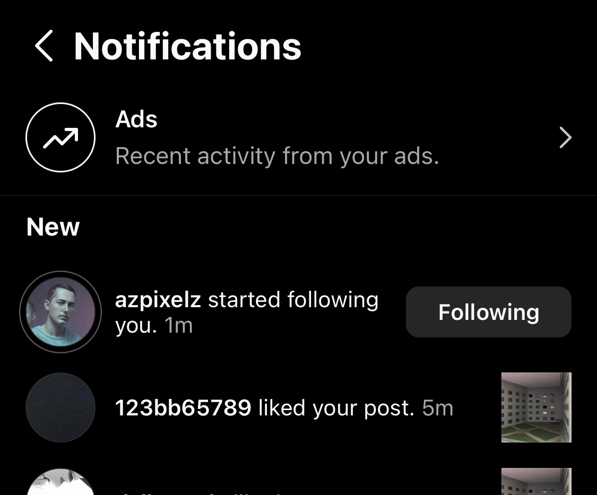

GLAZE MEDIA
Timeline:
Development Process:
I had the opportunity to be the Social Media Manager for our school project/dynamic media company known as Glaze Media: instagram was our main focus it was the platform we spent the most time and effort on. We've been focusing on several key areas to achieve our goals which were high engagement, follows, connections, etc. to achieve these we were:
- Posting originally curated content on a consistent basis: We've been putting a lot of effort into creating high-quality original content that aligns with our brand as well as something we believe our followers would love. We've also made sure to post on a regular schedule to keep our audience engaged.
- We worked on editing our feed to keep things cohesive, having a consistent aesthetic is important to creating a strong brand identity on social media. That's why we've been working hard to edit our feed and ensure that it looks put together as a whole.
- Mass following major brands, influencers, and celebrities: is a really good tactic to gain traction.
- Using an extensive amount of effective hashtags: We've done a lot of research to find the most effective hashtags for our content and have been using them consistently to increase our visibility on instagram.
- Tagging major brands, influencers, and celebrities: By tagging other people and brands in our content, we've been able to get their attention
- Reposting our content in unique and engaging ways: We've been using Instagram stories to repost our content in interesting and creative ways, like using polls, Q&A, and slider features to increase engagement.
- Engaging with our followers via comments, DMs, etc.
- Engaging with other media outlets like ours and networking to create connections with creatives: By building relationships with other media outlets and creatives, we've been able to collaborate on projects, share our content, and learn from others in our industry.
- We used similar tactics on our other platforms: we did use these platforms less frequently in terms of our main content but we used these as important promotional tools to garner attention on our blog posts and instagram posts, as well as extra content like bts footage in shoots, etc.
- We were able to generate many interactions with our users. These interactions were like dms, polls, sliders, reposts. A lot of these came from the use of our social media strategies.
Now to discuss some of our most notable interactions. This one for me personally was really cool as Im a huge fan of Designer dapper Dan. He’s a fashion icon known for introducing high fashion into the hip hop world, and the founding father of the bootleg fashion trend. Another really cool interaction we were able to have was with 3d artist az pixels.. he’s an up and coming blender artist in the liminal space art scene. We were fans of his work prior to this project so it was really great to connect with him! And he actually ended up giving us a follow it was really great!
 


